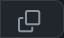
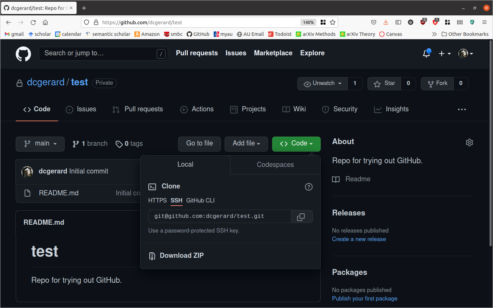

Git and GitHub
David Gerard
2021-12-09
Learning Objectives
- Version Control with git.
- Collaboration and software-hosting with GitHub.
- Git Cheat Sheet
- Git Handbook
- Git Novice
Initial Setup
Make sure you have (i) git installed and (ii) you can connect to GitHub.
To verify that you have git installed, open up the terminal and type
git --versionif git is installed, you will see something like
git version 2.25.1To see if you can connect to GitHub:
Enter the following in the terminal:
ssh -T git@github.comType “yes” if prompted to continue connecting.
You are successful if you see something like
Hi dcgerard! You've successfully authenticated, but GitHub does not provide shell access.
If you have issues with either of these step, go to Setting up Git and GitHub
Version Control:
Version control system: a program that tracks iterative changes of files. Git is the most popular version control system.
You can go back to previous versions of your code/text, then move forward to the most recent version, or keep the old version.
You can create copies of the code, change them, then merge these copies together later.
Motivation 1: Change code without the fear of breaking it
You want to try out something new, but you aren’t sure if it will work.
Non-git solution: Copy the files
- analysis.R,
- analysis2.R,
- analaysis3.R,
- analysis_final.R,
- analysis_final_final.R,
- analysis_absolute_final.R,
- analysis7.R
- analysis8.R
Issues:
- Difficult to remember differences of files.
- Which files produced specific results?
Git lets you change files, keeping track of old versions, and reverting to old versions if you decide the new changes don’t work.
Motivation 2: Easy Collaboration
In a group setting, your collaborators might suggest how to change your analysis/code.
First non-git solution: Email files back/forth.
Issues:
- You have to manually incorporate changes.
- Only one person can work on the code at a time (otherwise multiple changes might be incompatible).
Second non-git solution: Share a Dropbox or Google Docs folder (a “centralized” version control system).
Issues:
- Again, only one person can work on the code at a time.
- Less user-friendly for tracking changes.
Git let’s each individual work on their own local repository and you can automatically incorporate changes.
Motivation 3: Great for job interviews
In a Kaggle Survey, 58.5% of data scientists say they primarily use git for sharing code.
You can make your final-project repo public so prospective employers can view your work.
You can host a website on GitHub, increasing your visibility. I host my personal website and teaching websites on GitHub.
Basic Git
A repository (or repo, for short) is a collection of files (in a folder and its subfolders) that are together under version control. In data analysis, each repository is typically one project (like a data analysis, a homework, or a collection of code that performs a similar task).
The way git works (graphic from Mark Lodato):

Working Directory: To git, this means the current versions of the files. Changes to files that you haven’t recorded only exist in the working directory and are not yet saved in the history.
Stage: Files that are scheduled to be committed to the history, but not yet committed. Only files in the stage will be committed to the history.
History: The timeline of snapshots of files. You commit a file to the history and then, even if you modify it later, you can always go back to that same file version.
We’ll focus on the right-hand-side of this diagram where your workflow is typically:
- Modify files in your working directory until you want a snapshot.
- Add these modified files to the staging area.
- Commit staged files to history, where they will be kept forever.
The left-hand side of the diagram is used when you want to undo mistakes.
All git commands begin with
gitfollowed immediately by an argument for the type of command you want to execute.For the right-hand-side of the diagram, the following are the useful git commands:
git init: Initialize a git repository. Only do this once per project.git status: Show which files are staged in your working directory, and which are modified but not staged.git add: Add modified files from your working directory to the stage.git diff: Look at how files in the working directory have been modified.git diff --staged: Look at how files in the stage have been modified.git commit -m "[descriptive message]": commit your staged content as a new commit snapshot.
Initialize a repository
Git needs to be told that a folder is a repo. Otherwise, it won’t keep files under version control.
In this class, you won’t need to tell git this (I’ll tell git this), but in the real world you will. So we’ll go over how to do this on GitHub and on the terminal.
On the terminal
Don’t initialize on your local for this lecture. These are just the steps you would do if you needed to initialize on your local.
Use
cdto enter the folder that you would like to keep under version control.The use
git initgit initThis will tell git that the folder is a single repo.
Your files are not yet tracked. You’ll need to do the steps below to tell git which files to track. But at least git now knows that this is a repo where tracking is possible.
On GitHub
Git is a version control system, GitHub is a website that hosts git repositories. (so on your resume, say that you know git, not GitHub).
You can create a git repo on GitHub (GitHub’s server is called the “remote”), then download (“clone”) the repo onto your computer (your computer is called the “local”).
On your GitHub homepage, click on “New”

Fill out the form. The options are pretty self-explanatory, and GitHub does a good job of providing descriptions. For this lecture, make sure
- Repository name is “test”.
- The repo is set to be “Private”
- You check “Add a README File”

Click on “Create Repository.
Cloning
“Cloning” is a fancy way to say download from GitHub.
But it also means that your local copy is connected to the remote copy automatically.
Enter the repo you want to clone, then click on the Button
Make sure that “SSH” is highlighted.
Then click on the  button to copy the link.

In the terminal, navigate to where you want to download the repo, then clone it with
git clonegit clone git@github.com:dcgerard/test.gitMake sure to change the link to what you copied (don’t use my link above).
Then move into your new repo
ls cd test
Status
Use
git_statusto see what files git is tracking and which are untracked.git statusGit should tell you that everything is up-to-date
On branch main Your branch is up to date with 'origin/main'. nothing to commit, working tree cleanEdit the README.md file to include your name, so that it looks something like this:
# test David Gerard Repo for trying out GitHub.Make sure to save your changes.
Now check the status again.
git statusGit should be telling you that README.md has been modified, and the changes are not yet committed.
On branch main Your branch is up to date with 'origin/main'. Changes not staged for commit: (use "git add <file>..." to update what will be committed) (use "git restore <file>..." to discard changes in working directory) modified: README.md no changes added to commit (use "git add" and/or "git commit -a")Add a new file, called “empty.txt” by
touch empty.txtExercise: Check the status again. What do you notice?
Staging
Use
git addto add files to the stage.git add README.mdAlways check which files have been added:
git statusUseful flags for
git add:--allwill stage all modified and untracked files.--updatewill stage all modified files, but only if they are already being tracked.
Committing
Use
git committo commit files that are staged to the commit history.git commit -m "Add name to README.md."Your message (written after the
-margument) should be concise, and describe what has been changed since the last commit.If you forget to add a message, git will open up your default text-editor where you can write down a message, save the file, and exit. The commit will occur after you exit the text editor.
If your default text editor is vim, you can exit it using this.
git statusshould no longer have README.md as a modified file.git status
History of Changes
You can use
git logto see what commits you have done.git logThere should be only two commits right now. One from GitHub and one from adding the name to README.md.
commit 0301eeaf74062f0b80fdb3c27a60cc5ac6f28ca7 (HEAD -> main) Author: dcgerard <gerard.1787@gmail.com> Date: Tue Nov 16 10:53:42 2021 -0500 Add name to README.md commit fefbaffe03e0b074c33aa215d1135e6f8b68701d (origin/main, origin/HEAD) Author: David Gerard <gerard.1787@gmail.com> Date: Tue Nov 16 10:04:47 2021 -0500 Initial commitExercise: Add the following line of text to “empty.txt”
blah blah blahSave the output. Now stage and commit the changes.
Looking at differences
Add the following lines of text to README.md
Never and never, my girl riding far and near In the land of the hearthstone tales, and spelled asleep, Fear or believe that the wolf in a sheep white hood Loping and bleating roughly and blithely leap, My dear, my dear, Out of a lair in the flocked leaves in the dew dipped year To eat your heart in the house in the rosy wood.And delete the line
Repo for trying out GitHub.Use
git diffto see changes in all modified files.git diffLines after a “
+” are being added. Lines after a “-” are being removed.You can exit
git diffby hittingq.git diffwon’t check for changes in the staged files by default. But you can see the differences usinggit diff --staged.git diff git diff --stagedExercise: Stage and commit your changes.
Pushing
Use
git pushto push commits to GitHub.git push origin mainDo this now.
“origin” is the name of the remote.
“main” is the name of the branch we are pushing to remote.
You can see what the remote is named by typing
git remote -vYou can see what branch you are on by
git branch
Pulling
If a colleague has pushed changes to GitHub, you’ll need to pull those changes ontol your local before you can push anything to GitHub.
This is different than cloning. “Cloning” downloads a repo that wasn’t on your local machine. “Pulling” updates your local machine with the changes on the remote.
Use
git pullto pull changes.git pull origin main“origin” is the name of the remote.
“main” is the name of the branch we are pulling to.
If there are no changes on the remote, you’ll get the following message
From github.com:dcgerard/test * branch main -> FETCH_HEAD Already up to date.
Branching
A branch is an “alternative universe” of your project, where you can experiment with new ideas (e.g. new data analyses, new data transformations, new statistical methods). After experimenting, you can then “merge” your changes back into the main branch.
Branching isn’t just for group collaborations, you can use branching to collaborate with yourself, e.g., if you have a new idea you want to play with but do not want to have that idea in main yet.
The “main” branch (the default in GitHub) is your best draft. You should consider anything in “main” as the best thing you’ve got.
The workflow using branches consists of
- Create a branch with an informative title describing its goal(s).
- Add commits to this new branch.
- Merge the commits to main
Create a branch
You create a branch with the name
<branch>bygit branch <branch>Suppose we wanted to calculate some summary statistics, but we are not sure if we want to include these in the report. Let’s create a branch where we explore these summary statistics.
git branch sumstatYou can see the list of branches (and the current branch) with
git branch
Move between branches
You switch between branches with:
git checkout <branch>Move to the sumstat branch with
git checkout sumstat
Edit Branch
- When you are on a branch, you can edit and commit as usual.
Push branch to GitHub
You can push your new branch to GitHub just like you can push your main branch to GitHub:
git push origin <branch>
Merge changes into main
Suppose you are satisfied with your changes in your new branch, then you’ll want to merge these into the main branch. You can do this on GitHub (see here). If you do so, then don’t forget to pull the changes from main back into your local machine.
git pull origin mainAlternatively, you can merge the changes in your local machine. First, checkout the main branch.
git checkout mainThen use
mergeto merge the changes from<branch>into main.git merge sumstatDon’t forget to push your changes to GitHub
git push origin main
Resolving Merge Conflicts
If two branches with incompatible histories try to merge, then git does not merge them.
Instead, it creates a “merge conflict”, which you need to resolve.
Instructions on resolving merge conflicts can be found here.
List of git commands
git init: Initialize a git repository. Only do this once per project.git status: Show which files are staged in your working directory, and which are modified but not staged.git add: Add modified files from your working directory to the stage.git diff: Look at how files in the working directory have been modified.git diff --staged: Look at how files in the stage have been modified.git commit -m "[descriptive message]": commit your staged content as a new commit snapshot.git clone <url>: Download a fresh copy of a remote repository onto your local machine.git remote add <remote> <url>: Link a local repository with a remote repository. The nickname of the remote repository is<remote>.git push <remote> <branch>: Push the changes from branch<branch>to the remote repository named<remote>git pull <remote> <branch>: Pull any modifications from<remote>into your local machine in branch<branch>.git branch <branch>: Create a branch called<branch>. Note that the default branch is calledmainormaster.git checkout <branch>: Move to the<branch>branch.git merge <branch>: Merge the changes in<branch>into the current branch.
Vocabulary List (Blischak et. al., 2016)
- Version Control System (VCS): (noun) a program that tracks changes to specified files over time and maintains a library of all past versions of those files
- Git: (noun) a version control system
- repository (repo): (noun) folder containing all tracked files as well as the version control history
- commit: (noun) a snapshot of changes made to the staged file(s); (verb) to save a snapshot of changes made to the staged file(s)
- stage: (noun) the staging area holds the files to be included in the next commit; (verb) to mark a file to be included in the next commit
- track: (noun) a tracked file is one that is recognized by the Git repository
- branch: (noun) a parallel version of the files in a repository
- local: (noun) the version of your repository that is stored on your personal computer
- remote: (noun) the version of your repository that is stored on a remote server; for instance, on GitHub
- clone: (verb) to create a local copy of a remote repository on your personal computer
- fork: (noun) a copy of another user’s repository on GitHub; (verb) to copy a repository; for instance, from one user’s GitHub account to your own
- merge: (verb) to update files by incorporating the changes introduced in new commits
- pull: (verb) to retrieve commits from a remote repository and merge them into a local repository
- push: (verb) to send commits from a local repository to a remote repository
- pull request: (noun) a message sent by one GitHub user to merge the commits in their remote repository into another user’s remote repository

This work is licensed under a Creative Commons Attribution-NonCommercial 4.0 International License.